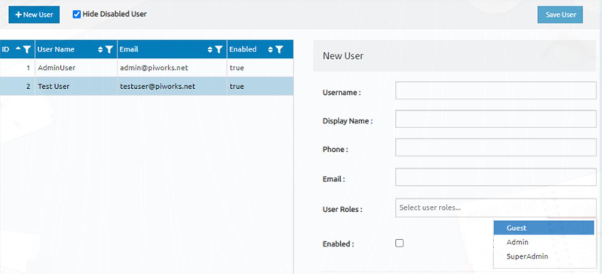
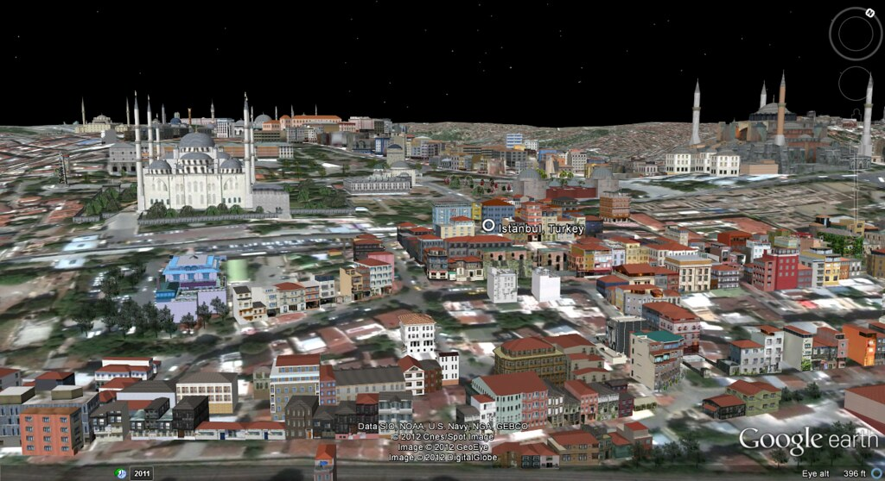

With open weather map API I pulled weather temperature data with python (requests) and store them in a database.
Temperature values came with Kelvin values, so I used PostgreSQL query to create temperature column with Celcius.
I used python to animate Confirmed Covid-19 cases with time series analysis. Note:(Reason why quality is bad, because of my initial animation was in GIF format. In order to display it in here I had to convert it to mp4 file)

I used Nashville housing dataset in this project. Main objecictive was cleaning some complex columns before using them for analysis.

I used Covid-19 dataset for exploratory analysis.

I created frontend project with Python. project includes Movie dataset which I used for analyse and visualisation.

In this project I used tableau dashboard to visualise different aspect of given data.

In this project I used Javascript with CSS and HTML in order to create sign-in ui.

With this project I used geopandas to manipulate and query the given data.